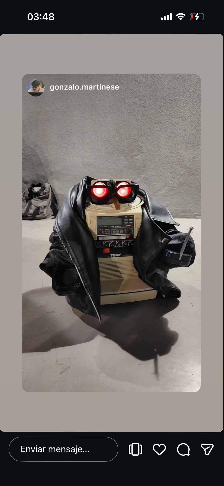
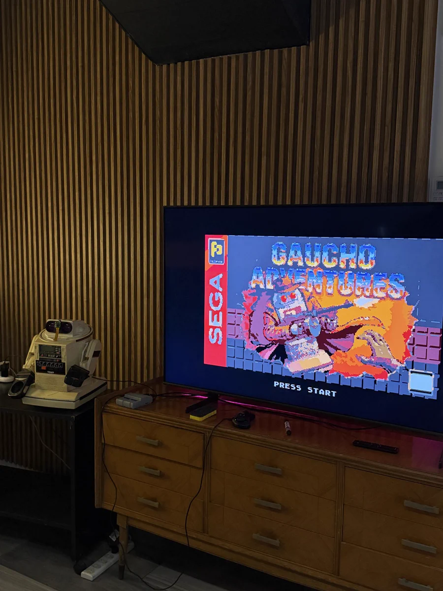

HackwareJurado05/09/2026

Omnibot 5402 · TOMY · 1984 Busca laburo · DevRel en Paisanos
Visto en
Paisanos · SLA · LABITCONF · Wallbit · Hackware · La Ofi




Autos y movilidad
Me gustaría mostrar cómo se arma un auto en una visita de planta. Ruedas ya traje.
Herramientas
Probame en una demo de herramientas conectadas. El único requisito es que me quede a mano, o a pinza.
Sensores e IoT
Me gustaría contar cómo un sensor de taller termina hablando con la red. De latencia tengo experiencia de primera mano.
Ideas de colaboración. Contacto y logos: a confirmar.
Canal de entrevista · Demostración local
Gaucho · Esperando
 Pantalla compartida
Pantalla compartida
Maqueta local. No se envía nada y arranca en silencio.